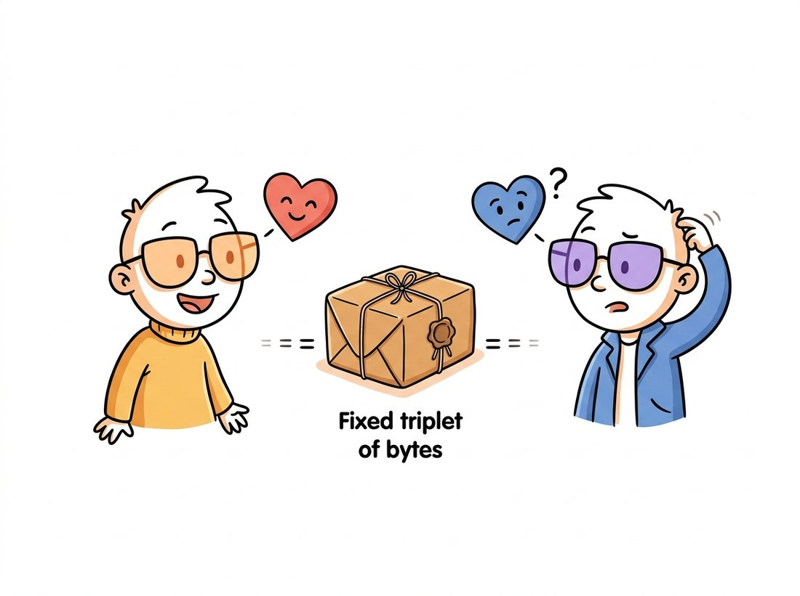

"I spent my whole career being red. Then someone loaded me with a different library and now, apparently, I have always been blue."
A Chromatically Confused Color Channel
Most vision bugs are not algorithm bugs; they are contract bugs, and they come from exactly four convention clashes. Channel order (BGR versus RGB), numeric representation (uint8 versus float and their arithmetic), coordinate order (row-column versus x-y), and memory semantics (views versus copies). None of them raises an exception. All of them silently degrade results. This section stages each one in a controlled demolition, then arms you with a five-question checklist that catches all four at any pipeline boundary, completing the defensive toolkit that Section 0.5 builds into a working pipeline.
The three preceding sections kept flagging hazards and deferring them here. This is the payoff section: short on new machinery, long on the judgment that separates an afternoon of progress from a week of mystery. Every demonstration below is synthetic and self-contained, so you can detonate each bug safely at the interpreter.
The four clashes share one initial, which makes them easy to recall as a pre-flight checklist: Color order (BGR vs RGB), Count type (uint8 vs float and their arithmetic), Coordinates (row-column vs x-y), and Copies (views vs copies). When a vision result is silently wrong but nothing crashed, run the Four C's before you suspect the algorithm: the bug is almost always one of these four, not your math.
1. BGR vs RGB: The Most Famous Gotcha in Vision Beginner
OpenCV stores color channels in blue-green-red order; essentially everything else (Pillow, scikit-image, Matplotlib, web browsers, PyTorch pipelines) uses red-green-blue. The reason is archaeology, not malice: in the late 1990s, when OpenCV's conventions froze, BGR was the native pixel layout of Windows bitmaps and popular cameras and capture cards, so matching it made memory copies free. The ecosystem later standardized the other way, and OpenCV, with millions of dependent programs, reasonably refused to flip. Figure 0.4.1 shows what the disagreement means at the byte level.

As the illustration above dramatizes, because nothing in the array records its convention, the bug manifests only at endpoints that assume one: a display (oranges turn teal, faces turn avatar-blue) or, far worse, a model trained under the other convention. Humans in photos look obviously wrong; a neural network just quietly loses accuracy, as in this chapter's opening story on the chapter page. Here is the clash in five lines, no image files needed:
import numpy as np
import cv2
rgb = np.zeros((80, 80, 3), np.uint8)
rgb[:, :, 0] = 255 # intended as RED (RGB convention)
# Hand the SAME bytes to an RGB consumer and a BGR consumer:
print("RGB world sees:", ("red" if rgb[0, 0, 0] == 255 else "?"))
bgr_view = rgb # same array, reinterpreted by cv2
b, g, r = cv2.split(bgr_view) # cv2 assumes channel 0 is BLUE
print("cv2 world sees: blue mean =", b.mean(), " red mean =", r.mean())
# RGB world sees: red
# cv2 world sees: blue mean = 255.0 red mean = 0.0 <- same bytes, new color
fixed = cv2.cvtColor(rgb, cv2.COLOR_RGB2BGR) # the one-line cure
print("after cvtColor:", cv2.split(fixed)[2].mean()) # red mean = 255.0
cv2.cvtColor is the explicit, greppable conversion that reconciles the two worlds.The professional discipline is boundary conversion: convert immediately after reading with cv2 (if the rest of your stack is RGB) or immediately before calling cv2 (if not), and never in between. Grepping a codebase for cvtColor should reveal the entire color-order story of the system. Color itself, what these three numbers physically mean, and the richer spaces beyond RGB, is the subject of Chapter 1.
2. uint8 vs float: Two Arithmetics, One Keyboard Intermediate
Section 0.1 showed that uint8 addition wraps around modulo 256. The subtler trap is that your tools disagree about what to do instead. NumPy wraps: $(a + b) \bmod 256$. OpenCV saturates: $\min(a + b,\ 255)$. Same expression, same inputs, different answers:
import numpy as np
import cv2
a = np.full((2, 2), 200, np.uint8)
b = np.full((2, 2), 100, np.uint8)
print((a + b)[0, 0]) # 44 NumPy: wraps modulo 256
print(cv2.add(a, b)[0, 0]) # 255 OpenCV: saturates at the ceiling
# And the third dialect: float never overflows, but changes the contract.
f = a.astype(np.float32) / 255.0 # 0.784...
print((f + 0.5).clip(0, 1)[0, 0]) # 1.0 saturation done by YOU, in float
cv2.add saturates to 255, and the float dialect defers clipping to the programmer; knowing which dialect a line speaks is part of reading vision code.Float images bring their own convention: values in $[0, 1]$ (scikit-image and most classical code) or, in the generative-model world of Part IV, $[-1, 1]$, since diffusion models such as those in Chapter 33 are trained on symmetric ranges. The conversion in each direction must rescale, not just cast: $x_{\text{float}} = x_{\text{uint8}} / 255$, and back via $x_{\text{uint8}} = \lfloor 255\,x_{\text{float}} + 0.5 \rfloor$. The cast-only mistake is so common it deserves its own demonstration:
import numpy as np
f = np.array([[0.0, 0.5, 0.99, 1.0]]) # a float image, range [0, 1]
print(f.astype(np.uint8)) # [[0 0 0 1]] catastrophic: truncation
print((f * 255).round().astype(np.uint8)) # [[ 0 128 252 255]] correct
astype truncates instead of rescaling, collapsing a healthy float image to zeros and ones; multiplying by 255 and rounding first is the correct, and annoyingly easy to forget, conversion.The from-scratch recipe for safely averaging or blending two uint8 images is five lines every time: promote both to float32, combine with weights, clip to $[0, 255]$, round, cast back. OpenCV collapses the whole dance into one call:
# Weighted blend of two uint8 images with built-in saturation:
# OpenCV promotes to a wider type, sums, clips to [0, 255], and rounds.
blend = cv2.addWeighted(a, 0.7, b, 0.3, 0) # 0.7*a + 0.3*b, saturated, uint8
cv2.addWeighted performing the promote-blend-saturate-round dance that the manual uint8 recipe spells out in five error-prone lines.A 5-to-1 reduction per use site, and the library internally performs the widening, the weighted sum, the saturation, and the rounding in vectorized native code, so it is also several times faster than the NumPy round trip. The same pattern (promote, compute, saturate) underlies most of cv2's arithmetic family: add, subtract, absdiff, multiply.
3. Rows and Columns vs x and y: The Coordinate Schism Intermediate
The third clash is geometric. NumPy indexes img[row, col]: vertical first, because an image is a matrix. Geometry, and every OpenCV function that takes points or sizes, speaks $(x, y)$: horizontal first, because a pixel is a location in the plane. Both conventions agree the origin is top-left with $y$ growing downward; they disagree about which number comes first. The same pixel is img[y, x] to the array and $(x, y)$ to the geometry API, and a size is shape == (H, W) to NumPy but (W, H) to cv2.resize. Figure 0.4.2 fixes the picture in memory.
img[2, 4] (row first); geometric APIs address it as the point (4, 2) (x first). Likewise the grid's shape is (4, 6) to NumPy and its size is (6, 4) to OpenCV's resize and drawing functions.The canonical symptom is a resize that swaps your dimensions, and it is worth triggering once on purpose so you recognize it forever:
import numpy as np
import cv2
img = np.zeros((100, 300, 3), np.uint8) # 100 rows tall, 300 cols wide
right = cv2.resize(img, (150, 50)) # cv2 size = (W, H): correct
print(right.shape) # (50, 150, 3)
wrong = cv2.resize(img, (50, 150)) # passing (H, W) by reflex
print(wrong.shape) # (150, 50, 3) rotated aspect!
pt = (250, 40) # geometric point: x=250, y=40
cv2.circle(img, pt, 8, (0, 255, 0), -1) # drawing APIs take (x, y)
print(img[40, 250].tolist()) # [0, 255, 0] but arrays take [y, x]
cv2.resize silently produces a distorted result, while drawing at point (x, y) and reading back at index [y, x] shows the two conventions coexisting correctly.Trigger the coordinate clash once on purpose so your eye recognizes it forever. Start from a deliberately non-square shape and resize it both ways, watching only the output shape:
import numpy as np, cv2
img = np.zeros((100, 300, 3), np.uint8) # 100 tall, 300 wide
for size in [(300, 100), (100, 300), (150, 150)]:
out = cv2.resize(img, size) # cv2 reads size as (W, H)
print(f"resize(img, {size}) -> shape {out.shape}")
cv2.resize reads it as (width, height).Observe that only (300, 100), the width-then-height tuple, preserves the original 1:3 aspect ratio; reflexively passing the NumPy-style (100, 300) rotates it to 3:1, and (150, 150) squashes it square. Vary the numbers and predict each output shape before you run it; when your prediction stops failing, the schism has moved from a fact you read to an instinct you own.
The row-column versus x-y feud is older than computer vision itself: it is the ancient quarrel between mathematicians, who write matrix entries as $(\text{row}, \text{column})$, and Descartes, who put $x$ first on his plane in 1637. Every cv2.resize((w, h)) you fat-finger is, in a sense, a 1600s notation dispute reaching across four centuries to swap your image's width and height. The bug is new; the argument is not.
This schism is permanent; you do not fix it, you manage it. Helpful habits: name variables h, w = img.shape[:2] the moment an image enters a function; never write a bare tuple like (640, 480) without a comment saying which convention it is in; and remember that everything geometric in OpenCV (points for Chapter 5's warps, rectangles for Chapter 23's detection boxes) speaks $(x, y)$.
4. Views vs Copies: The Edit That Traveled Intermediate
The fourth clash was introduced in Section 0.1 as a memory fact; here it is as a bug. Because slices are views, an innocent-looking region edit mutates the source image, and the corruption surfaces wherever the source is used next, often far from the edit:
import numpy as np
frame = np.full((4, 8), 100, np.uint8) # pretend: a camera frame
def annotate(img):
"""Draw a 'marker' in the top-left corner ... on a VIEW."""
corner = img[:2, :2] # no .copy(): still frame's bytes
corner[:] = 255
return corner
mark = annotate(frame)
print(frame[0, 0]) # 255 <- the original frame is vandalized
print(frame.mean()) # 119.375, statistics silently shifted for all consumers
safe = annotate(frame[:2, :2].copy()) # the cure costs seven characters
.copy() at the boundary restores ownership semantics.All four clashes are caught by interrogating any image at any boundary with five questions: (1) shape? (and is it (H, W) or (H, W, C)); (2) dtype?; (3) actual value range? (min and max, not assumptions); (4) channel order? (knowable only from provenance: which library produced it); (5) does it own its memory? (img.base is None, or did a view sneak through). The first three are one print statement. The habit of asking them is worth more than any single fact in this chapter.
Who: A perception engineer at an agricultural-drone startup running crop-health models in the field.
Situation: The training pipeline read images with torchvision (RGB); the onboard inference service grabbed frames with OpenCV's video capture (BGR) and fed them straight to the model.
Problem: Field accuracy ran about 14 points below the 0.91 validation score, weather-independent. Vegetation indices looked subtly wrong; nobody suspected color order because the monitoring dashboard happened to convert frames correctly for display, so everything looked fine to humans.
Dilemma: For a full quarter the gap was filed as domain shift, pointing at two expensive remedies: collect and label thousands more in-field images for retraining, or add a domain-adaptation stage to the model. A third, almost insulting possibility, a plain input-contract bug, kept getting waved off because the dashboard imagery looked correct. The engineer insisted on auditing the contract before committing to either costly path.
Decision: During a code audit, the engineer added the five-question contract check at the model boundary, logging shape, dtype, range, and provenance. The provenance log immediately showed cv2.VideoCapture frames entering a function documented as expecting RGB.
Result: One cvtColor call recovered roughly 12 of the 14 lost points, erasing most of the gap that had been blamed on "domain shift" for an entire quarter.
Lesson: Displays can lie on your behalf. Contracts must be checked where the data is consumed, not where it is admired.
5. The Defensive Checklist, as Code Intermediate
Teams that survive these pitfalls do not rely on memory; they encode the contract as an assertion helper and call it at every boundary worth defending. Here is a compact version you are encouraged to steal for the rest of the book:
import numpy as np
def expect_image(img, *, shape_len=3, dtype=np.uint8,
lo=0, hi=255, name="image"):
"""Assert the five-question contract; fail fast with a useful message."""
if not isinstance(img, np.ndarray):
raise TypeError(f"{name}: expected ndarray, got {type(img).__name__}")
if img.ndim != shape_len:
raise ValueError(f"{name}: expected {shape_len}-D, got shape {img.shape}")
if img.dtype != dtype:
raise ValueError(f"{name}: expected {dtype}, got {img.dtype}")
mn, mx = img.min(), img.max()
if mn < lo or mx > hi:
raise ValueError(f"{name}: values [{mn}, {mx}] outside [{lo}, {hi}]")
return img # returning it lets you wrap call sites inline
# Usage at a boundary:
# model_input = expect_image(frame, name="model_input") # uint8 (H, W, 3)
# float_in = expect_image(x, dtype=np.float32, lo=0.0, hi=1.0, name="float_in")
Note what the helper cannot check: channel order. No assertion can distinguish BGR bytes from RGB bytes (Figure 0.4.1 showed they are identical); only provenance tracking and visual spot-checks defend that frontier. This is also a first taste of a theme that recurs at much larger scale: the normalization statistics and tensor layouts of Chapter 21 and the channel-first conversions of Chapter 18 are this same contract discipline wearing deep-learning clothes.
The 2024-2026 tooling wave is steadily moving image contracts from comments into checked code. jaxtyping annotations like UInt8[np.ndarray, "h w 3"], enforced at runtime by beartype, make shape and dtype part of a function's signature; they have spread from the JAX world to general PyTorch and NumPy codebases. einops (whose notation, for example rearrange(img, "h w c -> c h w"), names every axis at every transform) has become the de facto defense against silent axis confusion in research code. On the performance side, PyTorch's channels-last memory format shows that layout is now an optimization knob, not just a convention: the same logical $(N, C, H, W)$ tensor stored channel-last can run markedly faster on modern accelerators under torch.compile. The direction of travel is clear and welcome: the five-question checklist is becoming something a type checker, not a code reviewer, gets to enforce.
With the four clashes understood, named, and fenced with assertions, you are equipped for the chapter's finale: a complete pipeline that exercises every skill from Sections 0.1 through 0.4 and adds the one practice not yet covered, measuring what you did.
Suppose the OpenCV maintainers announced that version 5 would switch to RGB order globally. Describe three distinct categories of existing code that would break, including at least one that contains no call to any color function (think about saved model weights and hand-written channel indices). Then explain why per-function flags like imread(..., rgb=True) are also considered dangerous. What does this teach about choosing conventions early in your own projects?
Extend expect_image from Code Fragment 7 with: (a) an optional channels parameter asserting img.shape[2]; (b) an owns_memory=True flag that rejects views using img.base; (c) a warn_suspicious_float mode that flags a float image whose maximum exceeds 1.5 (a strong hint someone forgot to divide by 255). Write five pytest cases: one passing and four that each trigger a different failure with a message you would be glad to see at 2 a.m.
The following snippet contains three distinct convention bugs from this section. Find them, predict the observable symptom of each, then run it and verify: img = np.random.rand(200, 300, 3); img = cv2.resize(img, (200, 300)); img = img.astype(np.uint8); cv2.imwrite("out.png", img). Rewrite the snippet correctly, and state for each fix which of the five contract questions would have caught the original mistake.